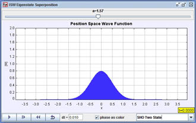
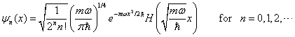
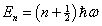
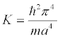

[Screen shot of the SHO ground state.]
A simple harmonic oscillator (SHO) with a potential energy V(x) = ½mω²x² has energy eigenfunctions ψn(x)
that are expressed in terms of a Gaussian times a Hermite polynomial Hn(x)

The angular frequency ω=(K/m)½ is that of a classical mass on a spring with spring constant
K. Substituting
these SHO eigenfunctions ψn(x) into the time-independent Schrödinger equation shows that they have energy eigenvalues En that scale as
the principal quantum number n
.
Note that unlike the infinite square well model, the simple harmonic oscillator energy eigenvalues are evenly spaced.
In order to compare ISW and SHO eigenfunctions, the spring constant is chosen so that the ground state energy eigenvalues of these two systems are equal.
